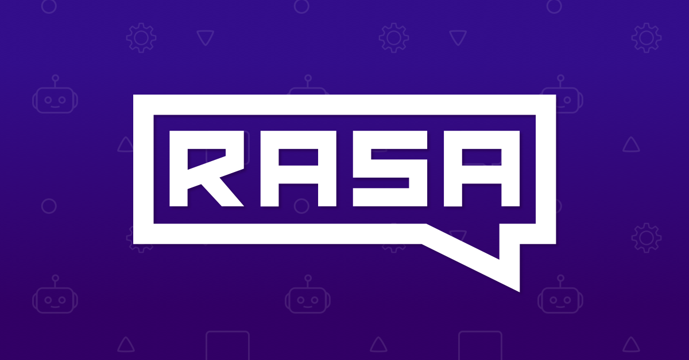
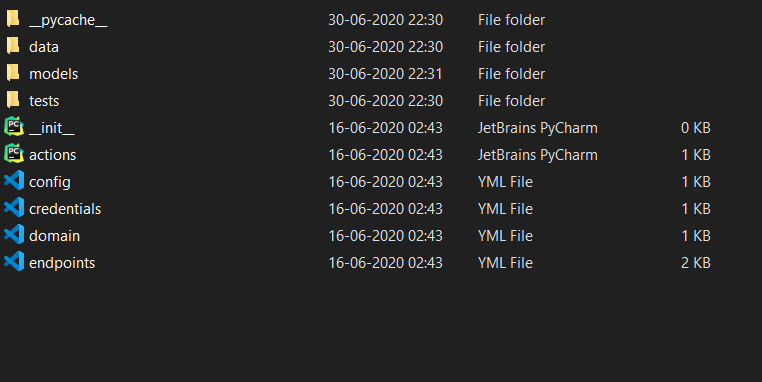

Rasa is the beautiful framework for the chatbots, Its easy to get into it before we get started with the beautiful part, we will discuss what Rasa does……
 The Rasa FrameworkWhen you got installed with Rasa on your machine you can run the rasa command:
rasa init
Rasa will make a series of files in the directory that you have chosen by using the rasa init command. In Rasa, we did not need the external server to run our model like dialogue flow it will run on your current folder you didn’t want to give your data to any of the external server to display the result. It’s a great advantage of using rasa.
The Assistant that we create with Rasa:
There are many chatbots, that evolved in the evolution of chatbots. The first one is a rule-based chatbot, Rule-based chatbots are also referred to as decision-tree bots. As the name suggests, they use a series of defined rules. These rules are the basis for the types of problems the chatbot is familiar with and can deliver solutions for. Rule-based will fail when it comes to the main scenario that the Questions can be asked in the two or more different forms and, the one action or objects can be called with more words. It will make the bot fails in more scenarios.
eg(cooked, barbecued, fried, grilled, heated, microwaved, poached, prepared, roasted, sauteed)
The words mentioned above implies the same thing that food got cooked, but the AI wants to understand that all the words gives the same meaning that the food got cooked. There come to play the contextual learning produced by Rasa to helps the user the provide the synonym to every word the user uses and group them to the single meaning and make them move on the correct path.
Without taking too much we go into the main part of the blog “getting started with rasa”
while giving rasa init function it will get assign some files in your system, the files are:
 Rasa generated filesInside the data file comes the two file nlu.md file and stories.md nlu files have predicted questions and intent of the set of questions and entities that we want to get extracted from the question and stories file this file is the specialty of rasa come into play This stories file specifies how the conversation occurs and, it will learn the conversation flow. Rasa comes with the mood bot. It, allows us to edit from that.
Domain file, this is the file where we define the intent, entities, slots, and actions.
Actions:
The actions are the reply message that the bot wants to be given to the user. There are three types of actions in rasa:
- utter_actions
- custom_actions
- default-actions
1.utter_actions
utter_action, start with utter_, just send a message to the user
To define an utterance action (ActionUtterTemplate), add an utterance template to the domain file that starts with utter_:
templates:
utter_my_message:
- "this is what I want my action to say!"
It is conventional to start the name of an utterance action with utter_. If this prefix is missing, you can still use the template in your custom actions, but the template can not be directly predicted as its action. See Responses for more details.
If you use an external NLG service, you don’t need to specify the templates in the domain, but you still need to add the utterance names to the actions list of the domain.
2.custom_actions
An action can run any code you want. Custom actions can turn on the lights, add an event to a calendar, check a user’s bank balance, or anything else you can imagine.
Rasa will call an endpoint you can specify when a custom action is predicted. This endpoint should be a web server that reacts to this call, runs the code, and optionally returns information to modify the dialogue state.
To specify, your action server use the endpoints.yml:
action_endpoint:
url: https://localhost:5055/webhook"
And pass it to the scripts using --endpoints endpoints.yml.
You can create an action server in node.js, .NET, Java, or any other language and define your actions there — but we provide a small python SDK to make development there even easier.
Custom Actions Written in Python
For actions written in python, we have a convenient SDK which starts this action server for you.
The only thing your action server needs to install is rasa-sdk:
pip install rasa-sdk
3.default_actions
action_listen
Stop predicting more actions and wait for user input.
action_restart
Reset the whole conversation.
action_default_fallback
Undo the last user message (as if the user did not send it and the bot did not react) and utter a message that the bot did not understand. See Fallback Actions.
action_deactivate_form
Deactivate the active form and reset the requested slot.
action_default_ask_affirmation
Ask the user to affirm their intent. It is suggested to overwrite this default action with a custom action to have more meaningful prompts.
action_default_ask_rephrase
Ask the user to rephrase their intent.
action_back
Undo the last user message (as if the user did not send it and the bot did not react). can be triggered during a conversation by entering /ba if the MappingPolicy is included in the policy configuration.
Many more concepts are lined up wait and learn the interesting world of chatbot with “Rasa”
Until the explore our awesome bots on nearly all the social media platforms and Happy Learning !